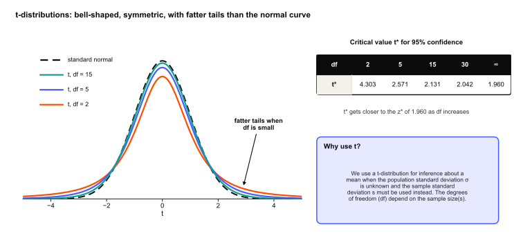
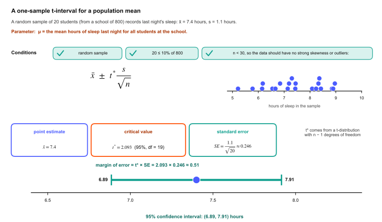
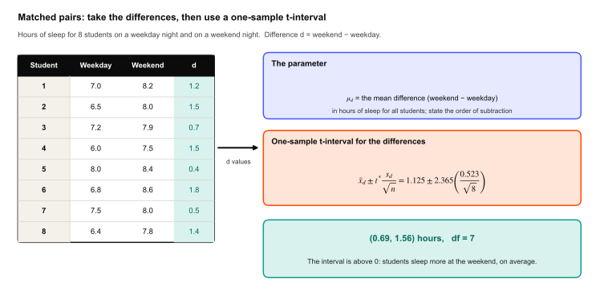
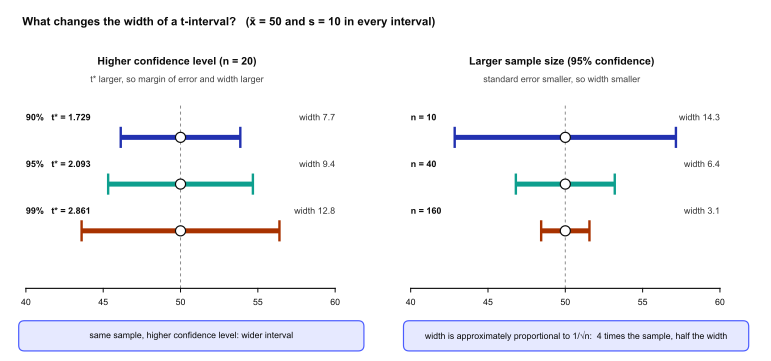
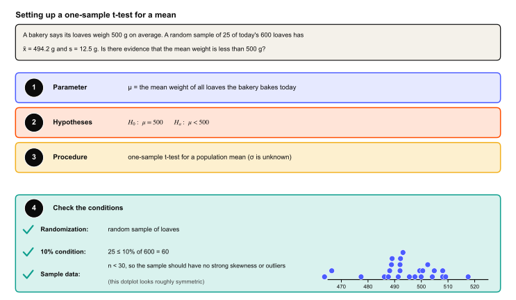
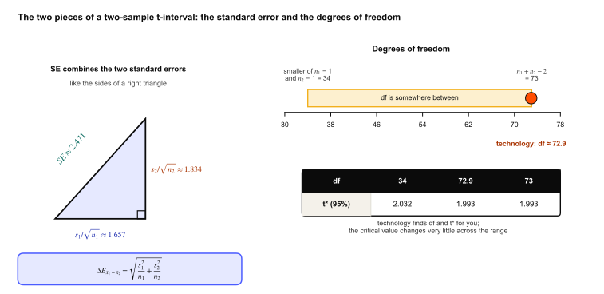
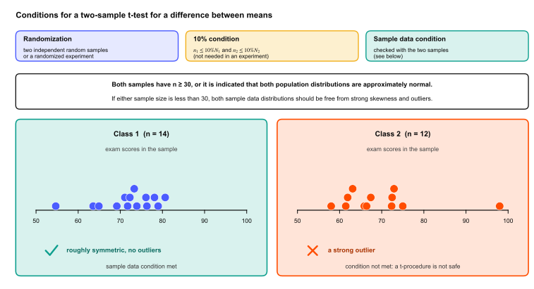
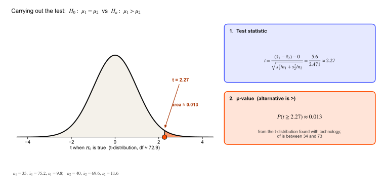

Sampling distributions for sample means
Taught in: Lesson 4.A.1 · Sampling Distribution for a Mean


- 4.1.A.1For a population with population mean $\mu$ and population standard deviation $\sigma$, when the sampled values are independent, the sampling distribution of the sample mean has mean $\mu_{\bar{x}}=\mu$ and standard deviation $\sigma_{\bar{x}}=\dfrac{\sigma}{\sqrt{n}}$.
- 4.1.B.1Sampling without replacement requires that two conditions must be met: 4.1.B.1.i The randomization condition—the data should be collected using a random sample. 4.1.B.1.ii The 10% condition—the population size must be at least 10 times larger than the sample size (n ≤ 10%N ), where N is the size of the population and n is the sample size.
- 4.1.B.2For a quantitative variable, if the population distribution can be modeled by a normal distribution, the sampling distribution of the sample mean, $\bar{x}$, can be modeled with a normal distribution regardless of the sample size.
- 4.1.B.3For a quantitative variable, if the population distribution cannot be modeled by a normal distribution, the sampling distribution of the sample mean, $\bar{x}$, can be modeled approximately by a normal distribution, provided $n\ge 30$. If the population distribution is extremely skewed, a sample size much larger than 30 may be needed to ensure the sampling distribution is approximately normal.
- 4.1.C.1The mean, standard deviation, and probabilities for a sampling distribution of a sample mean should be interpreted within the context of a specific population.
Constructing a confidence interval for a population mean or mean difference
Taught in: Lesson 4.A.2 · Interval for a Mean, Lesson 4.A.3 · Interval for a Mean Difference



- 4.2.A.1$t$-distributions, also called Student’s $t$-distributions, form a family of symmetric, bell-shaped, standardized distributions with wider tails than that of the standard normal distribution. Specific $t$-distributions are identified using a parameter known as the number of degrees of freedom ($df$), which is based on the sample size(s). When the degrees of freedom are small, the $t$-distribution has a much narrower peak and fatter tails than a normal distribution. As the degrees of freedom increase, the $t$-distribution more closely resembles the standard normal distribution (mean $\mu=0$ and standard deviation $\sigma=1$).
- 4.2.A.2$t$-distributions are used for finding critical values and test statistics for inferences about a population mean, $\mu$, when the population standard deviation, $\sigma$, is unknown and the sample standard deviation, $s$, must be used instead.
- 4.2.B.1The appropriate confidence interval procedure for estimating the population mean of a quantitative variable for one sample is a one-sample $t$-interval for a population mean. (The population standard deviation, $\sigma$, is not typically known for distributions for quantitative variables.)
- 4.2.B.2For a matched pairs design with two dependent samples, the appropriate analysis calculates differences between pairs of values to produce one sample of differences. The confidence interval procedure for the matched pairs design is a one-sample t-interval for a population mean difference.
- 4.2.B.3The parameter for a confidence interval for a population mean or population mean difference should reference the population mean or population mean difference and the response variable, in context. For the population mean difference, it is important to state the order of subtraction for the difference.
- 4.2.C.1A one-sample $t$-interval for a population mean or population mean difference requires that three conditions be met: 4.2.C.1.i The randomization condition—the data should be collected using a random sample or a randomized experiment. 4.2.C.1.ii The 10% condition—when sampling without replacement, the population size must be at least 10 times larger than the sample size ($n\le 10\%N$), where $N$ is the size of the population and $n$ is the sample size. 4.2.C.1.iii The sample data condition—it is indicated the population distribution is approximately normal, or $n\ge 30$, or if $n<30$, the sample data distribution should be free from strong skewness and outliers. For matched pairs, the number of differences should be greater than or equal to 30. If the number of differences is less than 30, the sample of differences should be free from strong skewness and outliers.
- 4.2.D.1A point estimate for a population mean is the sample mean, $\bar{x}$, or $\bar{x}_d$ for the sample mean difference.
- 4.2.D.2To estimate the population mean for one sample or the population mean difference between values in matched pairs, when the population standard deviation is unknown, the confidence interval is $\bar{x}\pm t^{*}\dfrac{s}{\sqrt{n}}$, where $t^{*}$ is the critical value for the central $C$% of a $t$-distribution with degrees of freedom $n-1$.
- 4.2.E.1The standard error ($SE$) for a sample mean is given by $SE_{\bar{x}}=\dfrac{s}{\sqrt{n}}$.
- 4.2.E.2For a one-sample $t$-interval for a population mean, the margin of error is the critical value ($t^{*}$) times the standard error ($SE$), which equals $(t^{*})\left(\dfrac{s}{\sqrt{n}}\right)$.
Justifying a claim based on a confidence interval for a population mean or mean difference
Taught in: Lesson 4.A.3 · Interval for a Mean Difference


- 4.3.A.1Because the confidence interval for a population mean or population mean difference is calculated based on a sample from a population, the computed interval may or may not contain the value of the population mean or population mean difference.
- 4.3.A.2The interpretation of the confidence level is as follows: In repeated random sampling with the same sample size from the same population, approximately C% of confidence intervals created will capture the population mean or population mean difference, where C represents the numerical value of the confidence level used.
- 4.3.A.3When interpreting a $C$% confidence interval for a population mean or population mean difference, we say we are $C$% confident the interval $(a,b)$ contains the value of the population mean or population mean difference, where $a$ represents the lower limit and $b$ represents the upper limit. An interpretation of a confidence interval for a population mean or population mean difference includes a reference to the parameter.
- 4.3.B.1A confidence interval for a population mean or population mean difference provides an interval of values that may serve as convincing evidence to support a particular claim about the population mean or population mean difference.
- 4.3.C.1For a given sample, increasing the confidence level will result in the following: 4.3.C.1.i The critical value will increase. 4.3.C.1.ii The margin of error will increase. 4.3.C.1.iii The width of the confidence interval will increase.
- 4.3.C.2Increasing the sample size decreases the standard error. Thus, when all other things remain the same, the width of a confidence interval for a population mean or population mean difference tends to decrease as the sample size increases. For a confidence interval for a population mean or population mean difference with a given confidence level, the width of the interval is approximately proportional to $\dfrac{1}{\sqrt{n}}$.
Setting up a test for a population mean or mean difference
Taught in: Lesson 4.A.4 · Hypothesis Test for a Mean, Lesson 4.A.5 · Hypothesis Test for a Mean Difference


- 4.4.A.1The appropriate test for a population mean with unknown population standard deviation σ is a one-sample t-test for a population mean.
- 4.4.A.2For a matched pairs design with two dependent samples, the appropriate analysis calculates differences between pairs of values to produce one sample of differences. The hypothesis testing procedure for the matched pairs design is a one-sample t-test for the population mean difference.
- 4.4.A.3The parameter for a hypothesis test for a population mean and population mean difference should reference the population parameter, the response variable, and the population in context.
- 4.4.B.1The null hypothesis for a one-sample $t$-test for a population mean is $H_0: \mu=\mu_0$, in which $\mu_0$ is the null hypothesized value for the population mean. A one-sided alternative hypothesis for a one-sample $t$-test for a population mean is either $H_a: \mu<\mu_0$ or $H_a: \mu>\mu_0$. A two-sided alternative hypothesis is $H_a: \mu\ne\mu_0$.
- 4.4.B.2The null hypothesis for a population mean difference is $H_0: \mu_d=0$. A one-sided alternative hypothesis for a population mean difference is either $H_a: \mu_d<0$ or $H_a: \mu_d>0$. A two-sided alternative hypothesis is $H_a: \mu_d\ne 0$.
- 4.4.C.1A one-sample t-test for a population mean or a population mean difference requires that three conditions be met: 4.4.C.1.i The randomization condition—the data should be collected using a random sample or a randomized experiment. 4.4.C.1.ii The 10% condition—when sampling without replacement, the population size must be at least 10 times larger than the sample size (n ≤ 10%N ), where N is the size of the population and n is the sample size. 4.4.C.1.iii The sample data condition—it is indicated the population distribution is approximately normal, or n ≥ 30, or if n < 30, the sample data distribution should be free from strong skewness and outliers. For matched pairs, the number of differences should be greater than or equal to 30. If the number of differences is less than 30, the sample of differences should be free from strong skewness and outliers.
Carrying out a test (part 1)
Taught in: Lesson 4.A.4 · Hypothesis Test for a Mean, Lesson 4.A.5 · Hypothesis Test for a Mean Difference


- 4.5.A.1The test statistic for a one-sample $t$-test for a population mean or population mean difference is $t=\dfrac{\bar{x}-\mu_0}{\dfrac{s}{\sqrt{n}}}$, where $t$ has degrees of freedom $n-1$. The $t$-statistic has a $t$-distribution with degrees of freedom $n-1$ when the null hypothesis is true.
- 4.5.A.2The p-value for a one-sample t-test for a population mean or population mean difference is found using the appropriate t-distribution table or technology.
- 4.5.B.1The p-value is the probability of obtaining a test statistic as extreme or more extreme than the test statistic that was observed (i.e., in the direction of the alternative hypothesis) given that the null hypothesis is true. An interpretation of the p-value of a hypothesis test for a population mean or population mean difference should include a statement that the p-value is computed by assuming that the null hypothesis is true (i.e., by assuming that the population mean is equal to the particular value stated in the null hypothesis in context).
- 4.5.C.1A formal decision explicitly compares the $p$-value to the significance level, $\alpha$. If the $p$-value $\le\alpha$, then reject the null hypothesis, $H_0: \mu=\mu_0$. If the $p$-value $>\alpha$, then fail to reject the null hypothesis.
- 4.5.C.2The results of a hypothesis test for a population mean or population mean difference can serve as the statistical reasoning to support the answer to an investigative question about the population that was sampled.
- 4.5.C.3A conclusion for the hypothesis test for a population mean or population mean difference is stated in context consistent with, and in terms of, the alternative hypothesis using non-definitive language. The conclusion should contain a reference to the parameter and the population.
Sampling distributions for the difference between two sample means
Taught in: Lesson 4.B.1 · Sampling Distribution for Two Means


- 4.6.A.1For two independent populations with population means $\mu_1$ and $\mu_2$ and population standard deviations $\sigma_1$ and $\sigma_2$, when the sampled values are independent, the sampling distribution of the difference in sample means $\bar{x}_1-\bar{x}_2$ has a mean $\mu_{(\bar{x}_1-\bar{x}_2)}=\mu_1-\mu_2$ and standard deviation $\sigma_{(\bar{x}_1-\bar{x}_2)}=\sqrt{\dfrac{\sigma_1^{2}}{n_1}+\dfrac{\sigma_2^{2}}{n_2}}$.
- 4.6.B.1Sampling without replacement requires that two conditions must be met: 4.6.B.1.i The randomization condition—the data should be collected using two independent random samples. 4.6.B.1.ii The 10% condition—the size of each sample should be less than or equal to 10% of the respective population size: $n_1\le 10\%N_1$ and $n_2\le 10\%N_2$, where $N_1$ is the size of population 1 and $N_2$ is the size of population 2. The sample sizes are represented as $n_1$ and $n_2$.
- 4.6.B.2If the data come from an experiment, the data only need to meet the randomization condition. The treatments must be randomly assigned to experimental units to meet the randomization condition.
- 4.6.B.3The sampling distribution for the difference between sample means, $\bar{x}_1-\bar{x}_2$, can be modeled with a normal distribution if the two population distributions can each be modeled by a normal distribution.
- 4.6.B.4The sampling distribution for the difference between sample means, $\bar{x}_1-\bar{x}_2$, can be modeled approximately by a normal distribution if the two population distributions cannot be modeled by a normal distribution but $n_1\ge 30$ and $n_2\ge 30$.
- 4.6.C.1The mean, standard deviation, and probabilities for a sampling distribution for the difference between sample means should be interpreted within the context of specific populations.
Constructing a confidence interval for the difference between two population means
Taught in: Lesson 4.B.2 · Interval for Two Means


- 4.7.A.1Based on the sample data, a confidence interval can be calculated to estimate the difference between two population means. The appropriate confidence interval procedure for two independent samples is a two-sample t-interval for the difference between population means.
- 4.7.A.2The parameter for a confidence interval for a two-sample t-interval for the difference between population means should reference the difference in the means, the response variable, and the populations in context.
- 4.7.B.1A two-sample $t$-interval for a difference between population means requires that three conditions be met: 4.7.B.1.i The randomization condition—the data should be collected using two independent random samples or a randomized experiment. 4.7.B.1.ii The 10% condition—when sampling without replacement, the size of each sample should be less than or equal to 10% of the respective population size: $n_1\le 10\%N_1$ and $n_2\le 10\%N_2$, where $N_1$ is the size of population 1 and $N_2$ is the size of population 2. The sample sizes are represented as $n_1$ and $n_2$. (Note: This condition is unnecessary when the data are from a randomized experiment). 4.7.B.1.iii The sample data condition—both samples should have a sample size greater than or equal to 30 or it is indicated that both population distributions are approximately normal. If either sample size is less than 30, both sample data distributions should be free from strong skewness and outliers.
- 4.7.C.1A point estimate for the difference between two population means is the difference in sample means, $\bar{x}_1-\bar{x}_2$.
- 4.7.C.2For the difference between population means when the population standard deviations are unknown, the confidence interval can be constructed as point estimate $\pm$ (margin of error). The confidence interval for the difference between population means is $(\bar{x}_1-\bar{x}_2)\pm t^{*}\sqrt{\dfrac{s_1^{2}}{n_1}+\dfrac{s_2^{2}}{n_2}}$, where $t^{*}$ are the critical values for the central $C$% of a $t$-distribution with appropriate degrees of freedom that can be found using technology. The degrees of freedom fall between $n_1+n_2-2$ and the smaller of $n_1-1$ and $n_2-1$.
- 4.7.D.1The standard error for the difference between two sample means is $SE_{\bar{x}_1-\bar{x}_2}=\sqrt{\dfrac{s_1^{2}}{n_1}+\dfrac{s_2^{2}}{n_2}}$, where $s_1$ and $s_2$ are the sample standard deviations.
- 4.7.D.2For the difference between two sample means, the margin of error is the critical value ($t^{*}$) times the standard error ($SE$) of the difference of two sample means, which equals $t^{*}\sqrt{\dfrac{s_1^{2}}{n_1}+\dfrac{s_2^{2}}{n_2}}$.
Justifying a claim based on a confidence interval for the difference between two population means
Taught in: Lesson 4.B.2 · Interval for Two Means

- 4.8.A.1Because the confidence interval for the difference between two population means is calculated based on samples from two populations, the computed interval may or may not contain the value for the difference between the two population means.
- 4.8.A.2The interpretation of the confidence level is as follows: In repeated random sampling with the same sample size from the same populations, approximately C% of confidence intervals created will capture the difference between the two population means, where C represents the numerical value of the confidence level used.
- 4.8.A.3When interpreting a $C$% confidence interval for the difference between two population means, we say we are $C$% confident that the interval $(a,b)$ contains the value of the difference in the population means, where $a$ represents the lower limit and $b$ represents the upper limit. An interpretation of a confidence interval for the difference between two population means includes a reference to the difference in the population means with the details about the populations it represents in the context of the study.
- 4.8.B.1A confidence interval for the difference between two population means provides an interval of values that may serve as convincing evidence to support a particular claim about the difference in two population means. For example, if the interval contains 0, then there is insufficient evidence to conclude there is a difference between the two population means. If the interval does not contain 0, then there is sufficient evidence to conclude there is a difference between the two population means.
Setting up a test for the difference between two population means
Taught in: Lesson 4.B.3 · Hypothesis Test for Two Means


- 4.9.A.1The appropriate test for the difference between two population means is a two-sample t-test for a difference between two population means.
- 4.9.A.2The parameters for a hypothesis test for the difference between two population means should reference the population parameters, the response variables, and the populations in context.
- 4.9.B.1The null hypothesis for a two-sample $t$-test for the difference between two population means, $\mu_1$ and $\mu_2$, can be written as either $H_0: \mu_1-\mu_2=0$ or $H_0: \mu_1=\mu_2$. A one-sided alternative hypothesis for the difference between population means can be written as either $H_a: \mu_1<\mu_2$ (or equivalently $H_a: \mu_1-\mu_2<0$) or $H_a: \mu_1>\mu_2$ (or equivalently $H_a: \mu_1-\mu_2>0$). A two-sided alternative hypothesis for the difference between population means can be written as $H_a: \mu_1\ne\mu_2$ (or equivalently $H_a: \mu_1-\mu_2\ne 0$).
- 4.9.C.1A two-sample $t$-test for a difference between population means requires that three conditions be met: 4.9.C.1.i The randomization condition—the data should be collected using two independent random samples or a randomized experiment. 4.9.C.1.ii The 10% condition—when sampling without replacement, the size of each sample should be less than or equal to 10% of the respective population size: $n_1\le 10\%N_1$ and $n_2\le 10\%N_2$, where $N_1$ is the size of population 1 and $N_2$ is the size of population 2. The sample sizes are represented as $n_1$ and $n_2$. (Note: This condition is unnecessary when the data are from a randomized experiment.) 4.9.C.1.iii The sample data condition—both samples should have a sample size greater than or equal to 30 or it is indicated that both population distributions are approximately normal. If either sample size is less than 30, both sample data distributions should be free from strong skewness and outliers.
Carrying out a test for the difference between two population means
Taught in: Lesson 4.B.3 · Hypothesis Test for Two Means


- 4.10.A.1The test statistic for a two-sample $t$-test for the difference between two population means is $t=\dfrac{(\bar{x}_1-\bar{x}_2)-0}{\sqrt{\dfrac{s_1^{2}}{n_1}+\dfrac{s_2^{2}}{n_2}}}$. The $t$-statistic has a $t$-distribution when the null hypothesis is true. The $t$-statistics with the degrees of freedom can be found using technology. The degrees of freedom fall between $n_1+n_2-2$ and the smaller of $n_1-1$ and $n_2-1$.
- 4.10.A.2The p-value for a two-sample t-test for the difference between two population means can be found using the appropriate t-distribution table or from the appropriate t-distribution using technology.
- 4.10.B.1The p-value is the probability of obtaining a test statistic as extreme or more extreme than the test statistic that was observed (i.e., in the direction of the alternative hypothesis) given that the null hypothesis is true. An interpretation of the p-value of a hypothesis test for a two-sample test for the difference between two population means should include a statement that the p-value is computed by assuming that the null hypothesis is true (i.e., by assuming the population means are equal to each other in context).
- 4.10.C.1A formal decision explicitly compares the $p$-value to the significance level, $\alpha$. If the $p$-value $\le\alpha$, then reject the null hypothesis, $H_0: \mu_1-\mu_2=0$ or $H_0: \mu_1=\mu_2$. If the $p$-value $>\alpha$, then fail to reject the null hypothesis.
- 4.10.C.2The results of a hypothesis test for a two-sample t-test for a difference between two population means can serve as the statistical reasoning to support the answer to an investigative question about the two populations that were sampled.
- 4.10.C.3A conclusion for the hypothesis test for the difference between two population means is stated in context consistent with, and in terms of, the alternative hypothesis using non-definitive language. The conclusion should contain a reference to the parameters and the populations.